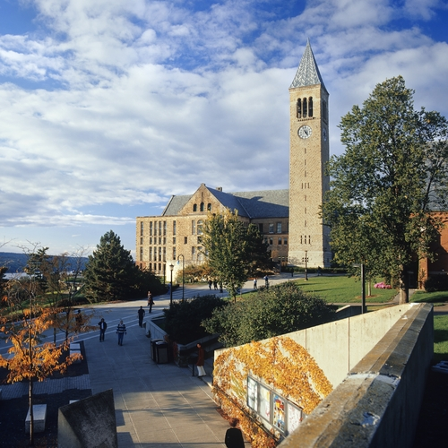

Cornell University - College of Engineering
- Major: Electrical and Computer Engineering
- Degree: Master of Engineering (expected Dec.2016)
- GPA: 3.83
- Image credit: colleges.usnews.rankingsandreviews.com
Shandong University - School of Information Science
- Major: Electronic Information Engineering
- Degree: Bachelor of Engineering (2011.9 - 2015.6)
- GPA: 89.85
- Second Prize in Shandong University Science and Technology Contest (2014)
- Shandong University Excellent Students Scholarship (2014, 2013, 2012)
- Vice President, Shandong University Science and Technology Student Association
- (Sept. 2012 – Sept. 2013)
- Image credit: commons.wikimedia.org